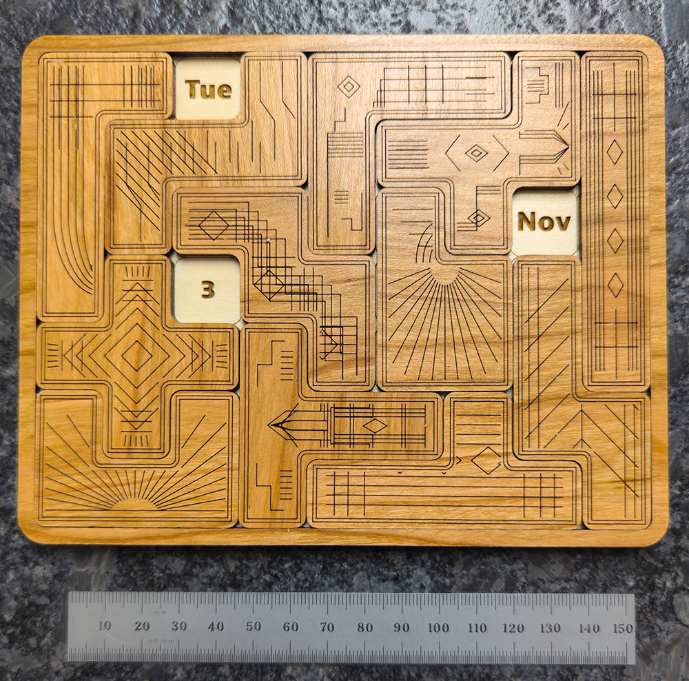
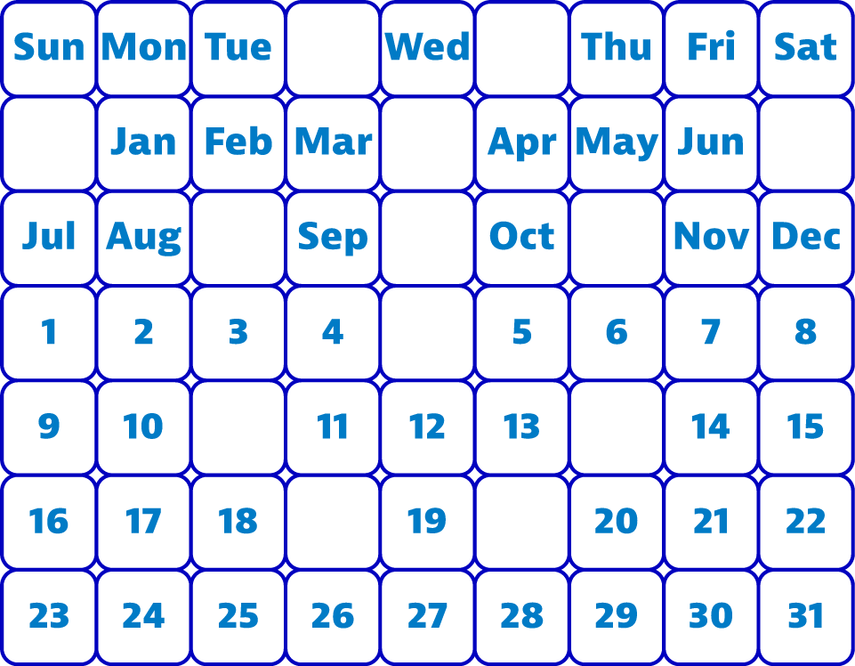

About & License
About the Puzzle
Inspired by a puzzle on Maths Gear, I created a new variation on the classic pentominoes puzzle. (See the Wikipedia article for background on pentominoes.) Since it's a pretty hard puzzle to solve, I made a puzzle solver web page for it. It looks like you found it!

For this puzzle, to make a valid solution you have to fit all twelve pentominoes into the puzzle's tray and their arrangement must show the day of the week, the month and the day of the month for today. So, the solution above was valid on Tuesday, November 3rd 2026, but no good again until Tuesday, November 3, 2037.
The days-of-the-week, months, and dates are arranged like this:

Development
This project was developed with substantial assistance from OpenAI's ChatGPT and Codex. The project requirements, architecture, design decisions, and acceptance criteria were directed and reviewed by the project maintainer. Codex assisted with implementation, testing, and refactoring.
License
Copyright (c) 2026 D. L. Ehnebuske.
Calendar Puzzle Web is distributed under the MIT License. MIT License (plain text)
MIT License Copyright (c) 2026 D. L. Ehnebuske Permission is hereby granted, free of charge, to any person obtaining a copy of this software and associated documentation files (the "Software"), to deal in the Software without restriction, including without limitation the rights to use, copy, modify, merge, publish, distribute, sublicense, and/or sell copies of the Software, and to permit persons to whom the Software is furnished to do so, subject to the following conditions: The above copyright notice and this permission notice shall be included in all copies or substantial portions of the Software. THE SOFTWARE IS PROVIDED "AS IS", WITHOUT WARRANTY OF ANY KIND, EXPRESS OR IMPLIED, INCLUDING BUT NOT LIMITED TO THE WARRANTIES OF MERCHANTABILITY, FITNESS FOR A PARTICULAR PURPOSE AND NONINFRINGEMENT. IN NO EVENT SHALL THE AUTHORS OR COPYRIGHT HOLDERS BE LIABLE FOR ANY CLAIM, DAMAGES OR OTHER LIABILITY, WHETHER IN AN ACTION OF CONTRACT, TORT OR OTHERWISE, ARISING FROM, OUT OF OR IN CONNECTION WITH THE SOFTWARE OR THE USE OR OTHER DEALINGS IN THE SOFTWARE.
Third-party software
The Rust library, runtime, and Wasm bindings retain their applicable notices. See third-party notices and dependency review.